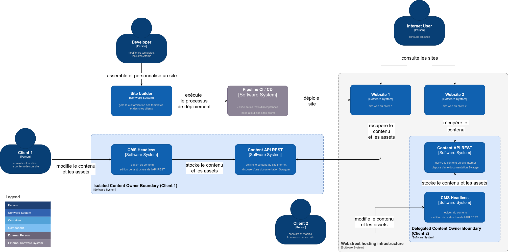
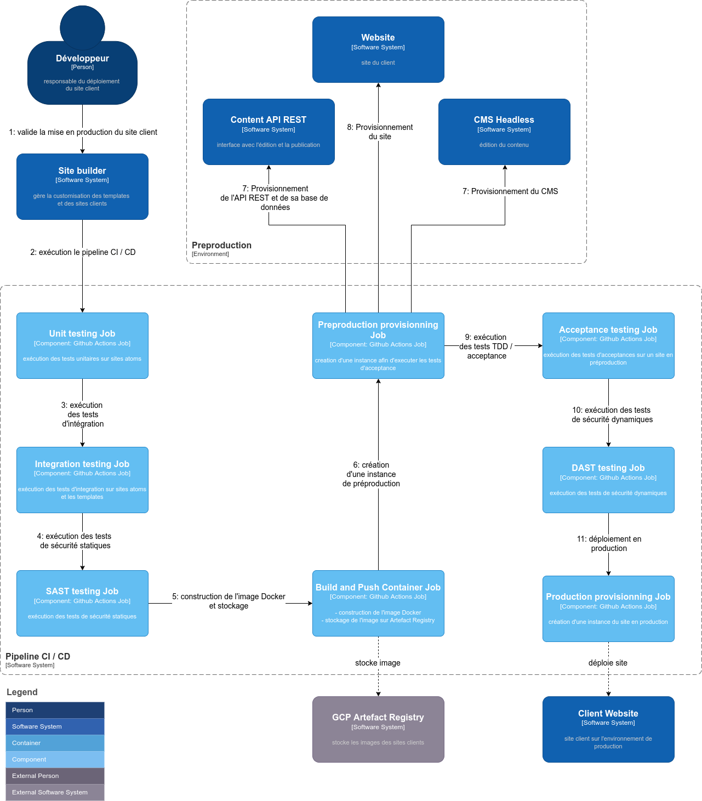

Objectifs
Présentation de la demande de changement
liée au
l'implémentation de l'architecture cible
en date du 9 juin 2022
- à travers les élèments du
dépot architectural et le code associé
Guillaume Lecoq
Architecte logiciel (freelance)
responsable de la définition de la nouvelle architecture
Sommaire
Rappel du contexte
Analyse des deux solutions proposées
Présentation du choix retenu
Présentation des impacts
Conclusion
Afin d'organiser le contenu de ma présentation
- je ferai un bref rappel du contexte à savoir le projet d'implémentation de la nouvelle architecture, la
demande d'ajout de fonctionnalités en
cours de cette dernière
- je proposerai ensuite deux solutions permettant de répondre à la demande de changement dans les délais
impartis
- je présenterai ensuite la solution retenue et j'expliquerai en quoi elle est plus viable
- je présenterai les impacts de l'implémentation de la solution que se soit aussi bien sur la plannification,
le cout ou
les modifications techniques à réaliser
- je finirai par conclure
Contexte : Développement d'une nouvelle architecture
autour d'un système pour générer et maintenir des sites Web
rapidement et efficacement
Contexte : Développement d'une nouvelle architecture
découverte de fonctionnalités en cours du projet
besoin de respecter les contraintes initiales du projet
découverte de fonctionnalités en cours du projet:
- segmenter les ressources d'un client
- assurer la confidentialité de certaines données
- mettre en place un processus de mise à jour centralisé et parallélisable
- faire valider la demande de modification par le client lors de la modification de son site internet
besoin de respecter les contraintes initiales du projet:
- 10 jours ouvrés restant avant la livraison finale de l'architecture cible
- cette date de livraison ne doit être absolument respecter
Contexte : L'architecture en semaine 6
Comme on le remarque sur le schéma, l'architecture est constituée :
- d'un serveur unique contenant à la fois ce que je nomme le "Site Builder"
qui va gérer l'assemblage et l'indexation des sites atoms et des template pour créer les sites clients.
On remarque également que le serveur webstreet va servir à héberger les sites clients.
et enfin la présence d'une seule base de données contenant l'ensemble des données clients et des données
relatives au site builder.
Solutions : Solution A
privilégier l'aspect commercial au détriment de l'aspect technique
en ajoutant plus d'exigences fonctionnelles
en ajoutant plus d'exigences fonctionnelles parmi lesquelles:
- mise en jour centralisée et au même instant réalisée par Webstreet grâce à un planificateur de tâches
- validation du client lors de modifications réalisées sur son site avant mise en production
- contenu volumineux sur le serveur du client
- fourniture du site internet au client avant validation
- déploiement en production du site internet client sur l'infrastructure de Webstreet
Solution A: Architecture
Comme on le remarque sur le schéma, l'architecture est constituée :
- d'un service de mise à jour qui se déclenchera à interval régulier et aura la responsabilité
de mettre à jour les dépot git clonés pour la diffusion des sites client concernés par une modification
- le processus de mise à jour peut etre synthétisé de la manière suivante:
1. l'équipe de développement envoie une notification au client.
2. le client est notifié par mail ou par un sms: il doit récupérer manuellement le site internet sur le dépôt Git mise à disposition par l'équipe de développement
3. le client donne son accord pour une mise en production par mail
4. l'équipe de développement envoie à travers le site builder un évènement de validation
5. à intervalles réguliers, un planificateur de tâche (de type "cron") va vider la queue dédiée dans le broker et
mettre à jour au même instant l'ensemble des sites validés par les différents clients
- Sur le schéma on remarque également que le client peut héberger les données sur son infrastrcuture (ou le déléguer à l'agence
webstreet par l'intermédiaire de sa base de donnés unique divisé par schéma, nous aurons donc un schéma par client)
Justification de l'éviction de la solution A: exemples
couplage fort avec la base de données ou le système de fichiers partagé
principe du moindre privilège non respecté
pas de tests automatisés
Bien que l'architecture répond à davantage d'exigences fonctionnelles, elle introduit également les risques suivants:
- couplage fort avec la base de données ou le système de fichiers partagé, ce qui limite l'évolutivité du système d'information (ex. possibilité de changer de base de données ou de CMS)
- principe du moindre privilège non respecté: par exemple le serveur de Webstreet doit disposer d'un accès complet à la base de données clients
- pas de tests automatisés en particulier les tests d'aceptances ce qui introduit une perte de productivité,
un oubli de certains tests entraînant une régression
Et de nombreux autres autres points tel que:
- le risque d'avoir des environnements divergents entre l'env de production et l'env du client
- une scalabilité réduite par les ressources sur le serveur de Webstreet
Solutions : Solution B
privilégier le côté technique au détriment du côté commercial
en introduisant plus de qualités non-fonctionnelles
TODO ou passer à la suite
Solution B: Architecture contextuelle

Comme on le remarque sur le schéma, l'architecture est de type multitenant hybride.
En effet, le client 1 héberge lui meme ses données, peut modifier le contenu grace à l'usage d'un CMS
et expose ses données à travers une API REST: il s'agit d'une mode d'isolation le plus strict.
Le client 2 utilise également un CMS et une API REST mais ces deniers sont provisionnés sur l'infrastructure géré par
l'agence.
Nous verrons dans un diagramme d'architecture technologique que les données du client 2 sont stockés sur une base de
données communes pour tous les clients de Webstreet ayant choisi cette modalité d'hébergement.
Architecture technologique: Single-Tenant
Comme on le remarque sur le schéma, l'architecture lorsque le client souhaite isolé ses données
Architecture technologique: Multi-Tenant
Solution B: Les avantages
meilleure maintenabilité / modularité
mesures de sécurité adaptés
portabilité accrue
meilleure disponibilité
Les avantages de ce type de déploiement:
- meilleure maintenabilité de la solution grâce à l'utilisation de méthodes d'ingénieurie éprouvées comme l'ajout
d'un pipeline CI / CD et meilleure modularité avec l'emploi de site ayant une architecture monolitique modulaire
- des mesures de sécurité adaptés pour assurer la confidentialité des données ou la prévention des vulnérabilité
- portabilité accrue avec l'usage de technologies à base de conteneurs
- meilleure disponibilité assurés par le fournisseur cloud Google Cloud Platform
Architecture technologique: Pipeline CI / CD

Solution B: Coûts additionnels
2 jours de travail supplémentaires
pour un coût de 1200 euros
La solution B n'introduit pas de ressources supplémentaires, je pourrais réaliser la solution B dans les délais
impartis. Comme on a pu le voir dans le gantt, les deux jours de travail supplémentaires seront donc travaillés le samedi afin de ne pas perturber le planning initial
Conclusion
- Afin de répondre à la demande de changement, j'ai pu envisagé deux solutions différentes (A et B pour les nommer), toutes introduisant différents compromis.
J'ai selectionné la solution B car elle répondra d'avantage aux enjeux d'évolutivité que la solution A et permettra à la société
Webstreet d'étendre son portefeuille client sans envisagé une refonte de toute l'architecture.
Enfin l'implémentation de la solution B respecte les délais impartis et le cout addionnel reste résonnable pour ce type de changement.
Je vous remercie de votre attention, Avez-vous des questions ?
Rappel du contexte: L'architecture cible
L'architecture cible de la plateforme présente un découpage des différents domaines d'activité en un ensemble
de microservices. Ces derniers communiqueront entre eux en utilisant un bus d'évènement ou une API REST
documentées
(nous verrons plus tard les simplifications proposées par la POC à ce sujet), ces micorservices se
découvriront avec l'aide d'un service discovery (comme Consul)
et l'observabilité sera assuré par l'intermédiare d'un container de type side car proxy. Nous pouvons égalemtn
remarquer que les microservices sur le schéma sont orchestrés par une API
gateway. Je vous recommande la lecture du document de définition de l'architecture pour avoir plus de détails
sur l'architecte cible.
Rappel du contexte: La POC
autour du système d'intervention d'urgence
étude de la faisabilité technique du projet
face aux contraintes et aux risques
- uniquement autour du système d'intervention d'urgence
- afin d'étudier la faisabilité technique du projet: il s'agit de savoir si des technologies répondent au
besoin
- face aux contraintes: comme le développement de la POC en tant que microservice exposant une API REST
- et aux risques potentiellement présents: une latence trop élévée des requetes du microservice, ou encore
l'inexactitude des informations renvoyées
ce qui est critique pour le système d'intervention d'urgence
Analyse de la méthodologie et des hypothèses: La méthodologie de la POC
- Basée sur les KPIs définis en amont de la PoC
Pour donner quelques exemples de KPI:
- taux de requêtes HTTP en erreur sur sur le nombre de requêtes HTTP en succès
- côut pour chaque requête HTTP (cela inclut les ressources tels que nombres d'instance déployé sur la
plateforme cloud, le pourcentage de
CPU / RAM consommé)
- ou encore une KPI basée sur temps de réponse de l'algorithme chargé du calcul des hopitaux les proches
- Ces KPIs sont mesurées à partir des rapports générés par l'exécution de différents tests dans le pipeline
d'intégration continue
et de déploiment continu
Analyse de la méthodologie et des hypothèses: Les hypothèses
temps de réponse de moins de 200 millisecondes
calcul orthodromique
le rayon couvert par la recherche sera de 50km
il existe au moins un hôpital dans un rayon de 50km
- un temps de réponse de moins
de 200 millisecondes avec une charge
de travail allant jusqu'à 800 requêtes par seconde, par instance de service
- calcul orthodromique c'est à dire à vol d'oiseau car le coût d'une API externe semble élevé
- le rayon couvert par la recherche sera de 50km du à la contrainte du temps de traitement d'une urgence (qui
doit être de 12 minutes
du moins c'est ce qui est souhaité)
Analyse de la méthodologie et des hypothèses: Simplifications
- 1 endpoint pour la réservation d'un lit qui permet aussi la mise à jour des informations sur les données
d'un hopital
- 1 endpoint pour la recherche d'un lit disponible sans mentionner la spécialité: on cherche l'hopital le plus
proche avec
un lit disponible dans un rayin de 50km
- 1 endpoint pour la recherche d'un lit dans la spécialité demandé si un lit est disponible dans un rayon de
50km
- communication REST entre microservices au lieu d'une communication à travers un bus de données pour la mise
à jour. Cela évite
pour les besoins du POC de créer un consommateur à l'écoute d'évènement.
Analyse de la méthodologie et des hypothèses: Les explorations
Jhipster et Spring Boot
MongoDB
Github Actions
Google Cloud Platform
- Jhipster pour générer un template d'application et Spring Boot pour le développement d'une API rest
- MongoDB pour stocker les données d'un hopital et surtout calculer la proximité des hopitaux
- Github action pour mettre en place un pipeline CI / CD
- GCP pour exécuter les tests de performance dans un environnement dédié et pour profiter des
avantages d'une plateforme cloud (par exemple la scalabilité, offre de produit basé sur les conteneurs)
Résultats et des recommendations: La performance
- En ce qui concerne le scénario d'éxecution du test de performance Gatling, on remarque que nous commencons
avec 400 requestes par secondes progrssisment
atteintes en 10 secondes puis nous ajoutons 400 requetes supplémentaires afin de satisfaire aux contraintes de
l'hypothèse de développement.
Un exemple d'un rapport de performance est à votre disposition dans le dépot de code dans le dossier à la
racine nommé "reports"
Résultats et des recommendations: La performance
- Sur ce graphique présentant le temps de réponse en ms classés par centile, on remarque qu'aucune réponse ne
dépassent les 100ms hormis au démarrage
du test
Résultats et des recommendations: La performance
- Le profiling des requetes à la base de données lors des tests de performance précèdents montre
que le temps de réponse moyen est de 5.5 micro secondes. Ce profiling est réalisé avec la soltion Jprofiler.
Résultats et des recommendations: Les rapports de tests
- Comme on le remarque Les rapports sont générés par le plugin maven Surefire.
- 34 tests unitaires, beaucoup sont générés par Jhipster.
- 27 tests d'integration, avec quelques lenteurs du au démarrage d'un conteneur mongoDB.
- aucun tests en échec
Résultats et des recommendations: Les tests d'acceptance
- Les tests d'acceptance sont basés sur un scénario écrit dans le langage gherkin.
- Les tests sont réalisé sur une instance déployée du microservice (en local ou en préproduction sur GCP)
- Tous les exemples sont conformes aux contraintes de la POC
Résultats et des recommendations: Mes recommendations
Ajouter la distance avec les hopitaux
Proposer un itinéraire routier
PoC pour expérimenter Quarkus
- ce calcul pourrait être effectué par une agrégation de type $geoNear et la récupération du champ
"distanceField" dans MongoDB
- avec l'hébergement d'une solution comme Graphopper, ce qui rendrait aussi plus précis les distances à
parcourir
- la plannification d'une nouvelle PoC pour expérimenter Quarkus, ce qui n'a pas pu etre réaliser avec
exaustivité du au manque de temps.
Il reste quand meme à se faire une idée définitive sur le framework et voir
si il améliore les performances
Résultats et des recommendations: Mes recommendations
sharding en fonction des secteurs géographiques
employer des technologies moins gourmandes
- c'est à dire le déploiement d'un cluster MongoDB avec comme index de sharding le secteur géographique
- pour cela , il faudrait évaluer à travers des benchmarks les performances de Go, Rust, ou NodeJs dans des
conditions similaires
Document TOGAF: SBB
Modules de construction génériques:
Framework Spring Boot
Cucumber / Gherkin
Github
Google Cloud Platform
Document TOGAF: SBB
Modules de construction de la preuve de concept:
JHipster
MongoDB
Autres documents: Stratégie de tests
- orienté sur la pyramide des tests:
- pour chaque type de tests, le document indique à quel moment le test doit etre réalisé, la méthodologie de
test souhaités
avec par exemple l'emploi de la méthodologie BDD.
Mais aussi le document indique la structure des tests dans le dépot de code.
Autres documents: Stratégie de tests
Les métriques
- le document de test décrit les métriques à collecter à travers les différents rapport de test:
- code coverage %
- % de tests réussis
- % de tests échoués
- durée des tests unitaires / tests intégration / tests aceptance
- temps de latence pour les tests de performance
Autres documents: Stratégie de tests
Les environnements d'exécution des tests
- Et enfin le document de stratégie de test décrit les environnements sur lesquels les tests vont être exécuté
à savoir
en local sur la machine du développeur, sur les runners de Github Action, ou sur l'environnement cloud de
Google Cloud Platform
Conclusion
- A travers l'étude du POC, nous avons pu déterminé que les tehcnologies utiliés en tant que standart dans
l'univers de Java et de son pendant web correespondent aux critères de performances énoncés dans les
contraintes du projet.
Nous pouvons affiner l'aspect fonctionnel en rajoutant des fonctionnalités au microservice ou bien
et amélirer la performance à travers la planification d'autres Poc
Je vous remercie de votre attention, Avez-vous des questions ?
Rappel du contexte: Le projet
Besoin de prioriser et de planifier les fonctionnalités
D'évaluer les ressources humaines
D'encadrer les pratiques de l'équipe
- Besoin de prioriser et planifier les fonctionnalités en utilisant les pratiques agile pour l'organisation du
travail (et nous le verrons à l'aide du framework Scrum).
- D'évaluer les ressources humaines: voir si dans l'équipe actuel, nous pouvons réutiliser des ressources et
sinon recruter en ayant au préalable fait des fiches de poste avec les compétences associées
- D'encadrer les pratiques de l'équipe en indiquant ce que nous réutiliserons du framework Scrum, en indiquant
les
postes clés lié à la gouvernance, et en indiquant les pratiques de développement recommandées
Le projet: La planification
- Nous pouvons remarquer que le projet est divisé de la manière suivante:
- La première semaine est composé de Spikes d'une journée chacune afin d'explorer les solutions techniques à
utiliser sur le projet.
- Puis le reste du projet est divisé en 3 sprints d'une semaine
- Un sprint est composé de user stories réparties en thèmes. Le thème peut se référer à un besoin bussiness ou
un besoin technique.
- Un sprint comporte également des phases propres à Scrum tel que le sprint planning, ou encore la review ou
la retrospective.
- A la fin de chaque release hormis la release 0, une version du projet peut etre déployé dans un
environnement de preprod voire de production si les parties prenantes sont d'accord.
- La planification sur le gantt est basé sur la complexité en story points (basé sur les nombres de la suite
de fibonnci) de
chaque story. Il m'a sembler pertinent de convertir les story points
en heures pour les besoins du gantt. Le gantt sera amené à être réévaluer, en fonction de la
vélocité de l'équipe ou d'une nouvelle estimation des stories.
- (Le gantt est un outil prédictif)
Le projet: Le backlog
Utilisation de Github project (board Kanban)
Definition Of Done pour les user / technical stories
- La plateforme Github permettra également d'héberger le code de la plateforme ainsi que son pipeline
d'intégration continue
- Comme le montre l'export du kanban, les différentes taches décrivent
des notes GIthub et pourront être traduites en Github Issue pour décrire par exemple une user story avec ses
critères d'acceptance.
- Chaque Github issue sera associé à une milestone qui correspondra à une release
- la résolution d'une story aura lieu à travers une Pull request associé à l'issue créée
- La definition of done permettra de déterminer si une tâche va dans la colonne Done dans le tableau Kanban
- Dans notre contexte la definition of done devra: avoir un coverage de tests unitaires d'au moins 80%, être
conforme aux tests d'acceptances si fournisseur
déployé sur un environnement de production avant la fin du sprint, avoir un pull request validée par le lead
développeur, intégration au CI / CD et tests de régressions réussis
Le projet: Le backlog
6 Spikes
11 technical stories
10 user stories
- un Spike est une activité déclenchée justement pour explorer un sujet, réduire le risque et l’incertude liés
à la possible mise en oeuvre d’une User Story
- un spike dans notre projet a une durée d'une journée et n'est pas estimé en story points
- le résultat d'un spike est par exemple la sélection d'une brique technologique formalisé sous forme d'une
ADR (architecture decision record), un POC réutilisable pour les prochaines technical ou user story
- Les Spikes ici sont rédigés sous forme de quesitons:
ex. Comment intégrer l’interface web? Avec quelles technologies?
- Doit-on développer la couche d’accès aux données des autres produits financiers? ou
existe t-il des composants réutilisables open source ou propriétaires?
- Les technical stories n’obéissent pas à un formalisme rédactionnel particulier. Ils sont estimés en story
points comme les user story.
- Les user stories suivent le formatisme suivant:En tant que [rôle de l’utilisateur], je veux que [capacité à
réaliser un besoin métier] afin que/de [valeur métier qui va ressortir de cette action].
- Elle essaye au maximum de respecter l'acronyme INVEST (indépendante, négociable, valorisable,
estimable, petite, testable)
- La taille d'une user story ne doit pas dépasser 13h sinon on considère qu'il s'agit d'une Epic
et elle devrait nécessairement être divisée afin de ne pas créer de mauvaises surprises en cours d’itération
- Une user story est toujours accompagné d'au moins un critère d'acceptance au format suivant:
Étant donné que [action réalisée par tel rôle utilisateur], quand [définition de la condition], alors
[définition de la conséquence attendue].
Cela permet de valider que la fonctionnalité est bien terminée.
Le projet: Exemple de technical stories
Création des dépôts Git
Intégration au pipeline CI / CD
Intégration du fournisseur d'identité
Mise en place du projet sur la plateforme cloud
- dépôts pour l'interface web, le user management, le le cryptocurrecy management service
- Intégration au workflow CI / CD avec par exemple Github actions: conditions d'execution du workflow,
segmentation en jobs
- Intégration du fournisseur d'identité à l'API gateway
- Mise en place du projet sur la plateforme cloud: ex. gestion des accès, gestion des quotas pour les produits
utilisés
- Mais aussi: la mise en place des storybook par le développeur front, etc...
Le projet: Exemple de user story
En tant qu’employé de la division «cryptocurrency branch», je souhaite que
la plateforme intègre la gestion des devises afin de développer l’ensemble de son offre
auprès des clients
estimation: 13 story points
- Ce qui implique potentiellement le développement backend d’un package intégrant des APIs tierces de
conversion de
devises crypto / non crypto d'ou une estimation importante
Le projet: Exemple de critères d'acceptance
Etant donné un client connecté sur la plateforme Crypto, quand le client accède à la
page du prix des cryptomonnaies, alors le client peut visualiser au moins deux crypotomonnaies avec leur prix
d’acquisition dans une monnaie fiduciaire (ex. euros)
- Ce critère d'acceptance met l'accent sur le fait de disposer de plusieurs devises à la fin du développement
Ressources nécessaires: Les profils clés
Lead développeur Java
Product Owner
Architecte cloud Google Cloud Platform
Développeur frontend senior (Javascript)
Développeur fullstack Java
- Lead développeur Java: il encadre l'équipe de développeurs, collabore étroitement avec le product owner, et
met en place les bonnes pratiques
établies dans le guide des recommendations
- Product Owner: il est responsable de la vision produit, il identifier les besoins et exigences fonctionnels
des experts métiers,
il participe à la mise en oeuvre des pratiques du framework Scrum
- Architecte cloud Google Cloud Platform: il a la responsabilité de traduire l’architecture cible sur la
plateforme GCP,
d'automatiser et industrialiser le déploiement, de concevoir la surveillance / monitoring
- Développeur frontend senior (Javascript): il selectionne les outils frontend pour l’élaboration de la
solution et cadre les différents POC, il aura aussi
la responsabilité du développement à savoir l'intégration du backend et du design UX / UI
- Développeur fullstack Java: il aura la responsabilité de développer, de maintenir les services Java et
pourra intervenir en soutien sur
la partie front sur le nouveau projet.
Ressources nécessaires: L'équipe
4 profils à recruter / missionner
1 profil déjà disponible: Développeur fullstack Java
mais nécessite de monter en compétences
- recruter car nous avons besoin sur le long terme d'un Lead développeur Java et d'un développeur front end
senior
- missionner pour les besoins de l'implémentation: Architecte cloud Google Cloud Platform, Product Owner
- David Merle, Senior Software Engineer, occupera également le poste de développeur Java et
viendra en support du développement front. Il sera nécessaire de compléter ses compétences avec une formation
sur la plateforme GCP (réaliser par le cloud architecte si possible)
ainsi que d’une formation supplémentaire sur le framework front selectionné (Ex. React).
- Les autres profils présents dans le rooster de l’entreprise n’ont pas été retenus à cause d’un écart trop
important avec les postes désirés pour la réalisation du projet.
KPIs: Indicateurs de performance agile
Vélocité de l’équipe
Humeur de l’équipe
- la vélocité mesure la quantité de travail (un certain nombre de user stories) accomplie dans
un sprint
- la vélocité sera représentée par un Sprint Burndown Chart lors d'un sprint et permettra
de suivre l’évolution de la quantité de travail restante pour une période donnée
- l’humeur de l’équipe pourra être évaluée en établissant des points réguliers avec les colla-
borateurs ou encore la mise en place de tableaux de bord affichéx lors de chaque retropsective permettant aux
collaborateurs
d'indiquer avec des smileys leur humeur à la manière des équipes de Spotify, sur par exemple la valeur estimée
du travail de l'équipe, la vitesse de l'équipe et bien
d'autres indicateurs
KPIs: Autres indicateurs de performance
Deployment Frequency
Change Failure Rate
MTTR
Lead Time for Changes
- avec des métriques qui permettent également de mesurer la vélocité mais aussi la stabilité.
- Fréquence de déploiement afin de mesurer combien de fois l'organisation déploie avec succès ces release en
production
- Change Failure Rate c'est à dire le pourcentage de déploiement causant une défaillances en production
- Mean time to recovery (MTTR) ou combien de temps met l'organisation à se remettre d'une défaillance en
production
- Lead Time for Changes c'est à dire le temps moyen pour lequel le dernier commit se trouve en production
Guide de Recommandations: Sommaire
Gouvernance de l’équipe agile
Elements du framework Scrum utilisés
Méthodes de travail de l’équipe de développement
- Le contenu de mon guide de recommandations est organisé de manière à répondre à deux questions:
- comment s’assurer que les standards internes de développement sont maintenus et que l’archi-
tecture est respectée?
- quelles sont les méthodes de travail de l’équipe de développement?
Guide de Recommandations: Gouvernance
Autour de 3 rôles
Product Owner, Scrum master, Lead développeur
- Le rôle du product owner est de définir le produit, sa roadmap, et de veiller à
ce que celui-ci réponde aux attentes des utilisateurs mais également aux besoins du client
- Le Scrum master a pour objectif de faciliter l’organisation de l’équipe autour des
bonnes pratiques proposées par le framework Scrum. Il sera partagé par l'équipe de développement.
- Le rôle du lead développeur est d’accompagner toute une équipe de déve-
loppeurs afin de garantir la réussite du développement technique du projet
Guide de Recommandations: Elements de Scrum utilisés
Sprint Planning
Revue de sprint
Rétrospective de sprint
- Sprint Planning: Le Sprint Planning est une réunion dont la durée peut aller jusqu'a 2h et qui a pour but de
définir le contenu du sprint
à venir et clarifier tous les éléments du backlog du sprint. C'est à ce moment que l'équipe de développement
procéde à l'estimation des user stories
- Revue de sprint: la revue de sprint (Sprint Review) est le moment où l'équipe de développement présente le
travail effectué lors
du sprint aux différentes parties prenantes du projet à la fin du sprint courant. On ne montre que les
fonctionnalités entièrement fini. La revue de sprint
devra durée 2h
- Rétrospective de sprint: Elle a lieu après la revue de sprint et son objectif est d’identifier les
dysfonctionnements dans l’organisation de l’équipe
afin de pouvoir définir des actions concrètes à mettre en place dans les sprints suivants et les résoudre. Sa
durée sera de 1h30 compte tenu de la durée d'un sprint qui est
de 1 semaine.
J'aura également pui citer le daily scrum: le principe de cette pratique consiste à réunir l'équipe de
développement chaque matin pour
une durée maximale de 15min afin de partager le travail de la veille, ce qu'on compte faire aujourd'hui et les
éventuels points de blocages
Guide de Recommandations: Méthodes de travail
Test driven Development
Behavior driven development
Revue de code
- Test driven Development: Le Test Driven Development (Développement Dirigé par les Tests),
est une technique de développement qui impose l’écriture de tests avant même l’écriture de la première ligne
de code. L’intérêt de cette technique est qu’elle permet d'améliorer le design du code de la solution et
d'avoir
une meilleure couverture de tests.
- Behavior driven development: il s'agit d'une méthodologie dont le but est de s'assurer que l'ensemble des
parties prenantes du développement logiciel
partagent la même compréhension du comportement logiciel attendu. Pour cela, les équipes métiers et technique
rédigent ensemble des scénarios pour décrire le comportement
du logiciel et les développeurs automatisent ces scénarios sous la forme de tests exécutables.
- La revue de code est l'occcasion pour le lead développeur de passer en revue le code développé par un des
membres de son équipe avant une fusion
avec le code de production. Le lead développeur vérifie à cette occasion que le code repecte les standards de
qualité du projet.
Guide de Recommandations: Méthodes de travail
Intégration continue
Logiciel de gestion de version décentralisé
- Intégration continue: L'intégration continue est un ensemble de pratiques utilisées en génie logiciel,
consistant à vérifier,
à chaque modification réalisés par de multiples développeur dans le code source que le résultat des
modifications ne produit pas de régression dans l'application développée
lors de l'intégration du travail de chacun.
- Logiciel de gestion de version décentralisé:
un système de gestion de versions est un système qui enregistre toutes les modifications apportées à une liste
de fichiers.
Le fait qu'il soit décentralisé fait qu’il est possible de travailler en mode déconnecté avec son dépôt de
code tout en gardant des fonctionnalités avancées de collaboration lorsqu’on est connecté
je recommande l'usage de Git et d'un système de gestion des branches nommé Gitflow.
Conclusion
- A travers une première version du backlog, j'ai décrit les fonctionnalités qui pourraient être développées,
qu'elle soit technique ou non.
La planifications de chacune de ces fonctionnalités se retrouve dans le gantt, qui sera modifié régulièrement
par rapport aux priorités de
l'equipe de développement ou encore de sa vélocité. J'ai donné l'ensemble des éléments pour constituer
l'équipe de développement à travers la création
de fiches de postes ou la réutilisation d'une ressource déjà disponible en interne.
Afin que l'implémentation de l'architecture soit respecté, j'ai indiqué le cadre de gouvernance de l'équipe,
les éléments
du framework Scrum à réutiliser et les méthodes de développement utiles à la réalisation du projet
Je vous remercie de votre attention, Avez-vous des questions ?
Rappel du contexte: L'existant
Echanges sur l'article hors solution
Pas de gestion des accès
Gestion des données centralisée
- par mail ou par téléphone, ce qui diminue la fluidité des échnages et entraine un retard de publication
- le dossier partagé est accessible pour tous les collaborateurs sur site
- de plus aucun document ne fait mention de procédures de sauvegarde, ce qui implique aussi la perte de la
tracibilité
des changements faits sur les articles
Rappel du contexte: La cible
- l'architecture cible repose sur deux patterns d'architecture: les micro frontend et les microservices
- l'implémentation des micro frontend restera à déterminer à la suite d'un Poc
- Tous les microservices délégueront la gestion de la persistance de données à des fournisseurs externes
- Certains comme le microservice de gestion de document fera appel à une API intermédiare, la Content
Repository API for Java
dont le but est d'unifier l'accès au stockage des données et de la structurer.
- des logiciels supports de l'architecture seront nécessaires pour assurer: la sécurisation des accès avec un
Identity Management system
- mais aussi une gestion opérationnele avec l'intégration d'outils de monitoring, d'alerting et de tracing
distribués
- le tout géré par un orchestrateur de conteneur
La roadmap: Le planning
Elaboration d'un PoC orienté micro frontend / microservice
Développement des microservices
Phase de déploiement
- Ce PoC se concentrera sur le cas d'usage de la gestion des utilisateurs, il devra déterminer de
l'intégration des micro frontend
- pour répondre aux question suivnates: intégration hoizontal (micro frotnend sur une meme page)? vertical
(séparé par des urls)?
- est-ce que la composition des micro frtonend sur le client est satisfaisante ? Utilise t-on un framework
comme Single SPA ?
- le développement des microservices devra gérer en parallèle des micro front end, ce qui implique une
organisation que chaque équipe de développement
soit répartie par domaine (User, Document, Comment) avec des compétences liées à la fois au front, au back et
au déploiement
- Phase de déploiement: à savoir la migration des données et la formation
La roadmap: Exemples de risques
Accès non autorisés
Corruption des données (ex. concurrence)
Disponibilité et latence du service de notification
- La liste exhaustive des risques est contenu dans le document architecture raodmap.
- Accès non autorisés: non conformité aux règles de gestion fixés dans le cahier des charges. Possibiliter de
diminuer le risques
avec une gestion des droits RBAC et une intégration de standard comme OpenID Connect pour l'authentification
ou encore une gestion des
ACL sur les blob storage
- Corruption des données: possibiliter de dimuner le risque avec l'intégration du standard JCR et de son
implémentation
la plus connue : Apache Jackrabbit. Et avec la non utilisation de transaction distribuée de type SAGA.
- Possibiliter de diminuer le risque en monitorant le service de notification et en choississant un
prestataire externe délivrant des
SLAs adaptés
La roadmap: Exemples de risques
Impossibilité de migration des données
Perte d'assets (articles, commentaires)
- Impossibilité ou difficulté de migration des données: ex. extraction des données difficiles à cause de leur
format multiple par exmple des fichier excel ou odt
- Perte d'assets due à la non réplication des données sur une meme zone géographique ou différentes zones
- J'aurai également pu citer des risques liées à une latence trop élévé de l'interface avec le choix d'un
pattern microfrontend inadapté
mais je me suis concentré sur les risques les plus importants
La roadmap: Les KPIs
KPIs centrés sur la productivité
sur des exigences fonctionnelles
et sur des critères opérationnels
- sur la productivité pour mesurer l'avantage de l'implémentation de l'archiecture, cela inclut par exemple:
le temps moyen de transmission d'un article de l'état de brouillon à l'état cloturé, le pourcentage d'article
cloturé sur Une
pérdiode de temps donnée
temps moyen de transmission d’un article d’un état « brouillon» à un état « clôturé»
- sur des exigences fonctionnelles: le nombre de commentaire sur un article, le nombre de document téléchargé
au forma PDF
- sur des critères opérationnels: pendant le développement avec le cout de l'implémentation (nombre de
prestataires engagés sur le développement, durée de réalisation de l’implémentation), lors de sa mise en
production avec
par exemple le nombres de défaillances sur des services développés en interne mais aussi des services Saas, le
nombre de failles de sécurité détectés et
la gravité des menaces
La roadmap: Les SBB
Micro frontends, Microservices
Les logiciels supports (ex. API Gateway)
L'automatisation du déploiement à travers la conteneurisation
- les micro frontends associés à chaque microservice
- pour les microservices: le User Management Service, le Document Management Service et le comment management
service
- la conteneurisation passe également l'intégration à une plateforme cloud disposant d'un orchestrateur
permettant Une
mailleure vélocité, une meilleure interopérabilité, et assurant les besoins de scalabilité sur la plateforme
cloud comme Google Cloud
Platform
- tous les solution building block disposent des taches à réaliser pour les intégrer à l'architecture, la plus
commune etant la conteneurisation
de chaque service
- à noter le bloc PoC qui permettra de selectionner l'intégration des micro frtonend
Compliance Assessment: La checklist
Centrée sur
Les bonnes pratiques en terme de
développement, de sécurité et d'infrastructure
- sous forme de principe à respecter
- de questions plus ou moins ouvertes
- de conformité à une norme, un standard ou encore un guide
Compliance Assessment: Quelques exemples
L'hébergement de la solution
Conformité avec le style architectural
Types de tests
Liste des types d'applications nécessaires
Gestion de l’authentification et des autorisations
Management de l’infrastructure
- Aucun élément de l’architecture cible ne doit être déployé sur une infrastructure de type On-
premise
- La gestion physique du matériel est déléguée à un fournisseur cloud. Recommandation de four-
nisseur cloud : Google Cloud Platform
- les SLAs des produits utilisés par l’architecture cible sur la plateforme cloud doivent être
compatibles avec les SLRs (Service-level requirement) / KPIs désirés par l’entreprise SCS
Magazine
- est-ce que les microservices seront indépendamment déployables?
- chaque microservice aura son propre référentiel de persistence de données
- est-ce que l’implémentation d’un microservice s’appuie sur une segmentation par couches
et respecte les principes de l’architecture hexagonale?
- est-ce que les APIs sont documentées avec la spécification OpenAPI ?
- est-ce que le style d’implémentation micro-frontend permet une indépendance dans le déploiement du service?
- est-ce que le système de persistence choisi permet de définir le niveau de réplication?
- est-ce que la non-inclusion d’un type de test n’entraine pas l’augmentation du risque de
défaillances / vulnérabilités sur la solution ?
- Les applications suivantes seront nécessaires dans le cadre d’une architecture microservice: Service
discovery, API Gateway
- pipeline CI / CD
- Outils de monitoring et d'observabilité
- solution Saas de notification mail
- Est-ce que l’authentification est gérée au niveau de l’API Gateway et fait appel à un « Identity And
Access Management» certifié OpenID Connect? est-ce que la gestion des autorisations s’effectue (à travers la
transmission d’un token JWT)
à l’intérieur de chaque microservice?
- Est-ce que l’infrastructure est définie en tant que « Infrastructure as code» ?
- Est-ce que la gestion des conteneurs en production est assurée par un orchestrateur?
Compliance Assessment: La checklist
Mais aussi sur
Les bonnes pratiques en terme
de gestion de données et de méthodologies
Compliance Assessment: Quelques exemples
Intégration des données et interopérabilité
Gouvernance des données et législation
L'utilisation d'une méthode agile
- Les données relatives à la gestion de documents doivent être enregistrées à travers l’API Java
«Content Repository» (JSR-283) et seront exportables au format XML
- Est-ce que l’implémentation de la JCR permet de communiquer avec des systèmes de persis-
tence « cloud native» ?
- Est-ce que l’implémentation de l’architecture cible est conforme au RGPD ? st-ce qu’une analyse d’impact
relative à la protection de la donnée a été réalisée (AIPD) ?
- Est-ce que la méthodologie SCRUM est employée?
Conclusion
- A travers le document Architecture Roadmap, j'ai décrit les risques associés à l'implémentation de la
nouvelle
architecture et les moyens de réduire ces derniers. Dans ce meme document, j'ai indiqué les critères de
mesures qui permettront de valider
l'implémentation de l'architecture cible. Pour valider la conformité, ces critères sont complétés par des
checklists dans un document séparé,
décrivant les orientations sous différents angles: applicatif, data, sécurité, management de l'infrastructure,
méthodologies. Ces checklists permettront
à l'équipe de développement de développer les solution building block en réduisant les divergences avec la
vision architecturale.
Je vous remercie de votre attention, Avez-vous des questions ?
Le plan de tests
Document basé sur la norme IEEE 29119-3
Tests des 4 applications avec différents niveaux et types de tests
priorisés par type de risques
Tests communs : types de tests
technique (unitaires, composants, intégrations)
de sécurité: SAST (ex. gosec), DAST (OWASP ZAP)
Tests communs : Exécution et tracabilité
CI / CD avec Github Actions
Management des tests (eg. TestRail)
Workflow des tests
unitaires, composants, intégrations, fonctionnels, sécurités
automatiser le plus possible
exécuter dans 2 types d'environnement
- tests rédigés dans le langage de programmation adaptés au contexte d'éxecution et exécuter à chaque nouveau
commit sur
la branche de développpement sauf pour les tetss d'intégration et les tests fonctionnels qui seront exécuter.
Tests complet de régression
lors du merge sur la branche principal.
- métriques pour chaque type de tests (ex. pourcentage de défaut ciritque, % de coverage en fonction des
priorité, )
- pas d'usage de DSL pour les tests fonctionnels mais des outils dédiés au web comme Selenium
- 2 env: un de test partagé par tous les développeur, un de préproduction pour réaliser certains tests
fonctonnelles et d'acceptances
ex. avec Biqquery séparation dans des tables distinctes dont le nom sera préfixé par le nom de l'envoronnement
Workflow des tests
tests d'acceptance
revue manuelle avec critères
sur l'environnement de préproduction
- basé sur l'écriture des user stories lors du démarage d'un sprints
- critères d'acceptances basées sur la formule Given / When / Then ou des checklits
- veiller à ne pas oublier les attibut de qualité basés sur des SLI et des SLOs
Editeur de vidéos interactives
Risques: erreurs dans l'export des métadonnées
Priorité: tests de composants, intégrations
Pipeline Github Actions, framework Testify (Go) et Jest (Javascript)
Tests GUI avec Selenium / Browserstack
Tests acceptances manuels
- composants ave le Metadata Exporter, et intégration avec le décodage des codecs vidéo
Lecteur de vidéos interactives
Risques: problèmes de QoS, parsing des métadonnées
Priorité: tests QoS, tests de composants, intégrations
Pipeline Github Actions
Tests GUI avec Selenium / Browserstack
- composants avec la bibliothèque Branching Logic permettatn d'assurer la lecture des éléments interactifs sur
videojs
- résultats des tests QoS, QoE sous forme de reporting
Lecteur de vidéos interactives
Risques: mauvaise ergonomie, contenu non populaire
Priorités: tests d'usabilités
AB testing, tests multivariés, multi-armed bandit
en production
Analyse avec la plateforme Analytics
- multi armed bandit: concurrence des phases d'expérimentation et des phases d'expolitation sans attendrer la
fin d'une expérimentation
SDK Analytics (Tracker JS)
Risques: asymétrie avec la spécification de l'API
Priorités: tests de composants, d'intégrations
Pipeline Github Actions, framework Jest
Tests d'intégration avec l'API de la plateforme Analytics
- tests de composant sur les composants liés au métrique, et d'intégration avec les api web et les api de
videojs de videojs
Plateforme Analytics
Risques: scalabilité, disponibilité
Priorités: tests de performance, de composants et d'intégrations
Pipeline Github Actions, framework Testify (Go)
Tests de performance avec k6
- test de composants sur le Front Collector API et d'intégration avec la communication avec Google CLoud
Storage
Conclusion
- Les nouvelles fonctionnlités entraine la création de 4 logiciels, qui auront peu d'impact sur l'architecture
existante.
La conformité des éléments présentant des risques sera controlé par les tests définis dans le plan de tests à
travers des tests techniques
mais également des tests markeing
Faisabilité technique
Une nouvelle architecture ne reposant que sur les données à extraire
Des risques liés à la gestion de la donnée, avec des solutions
d'atténuation
Faisabilité opérationnelle
Pas d'interruptions des activités durant la bascule
Nécessite des temps de formations impactant la disponibilité du
personnel
Ne nécessite pas de reprovisionner les postes utilisateurs
- le SI existant sera toujours opérationnel - formation d'une demie
journée pour chaque département - Hypothèse: application web pour le
non provisionnement complet d'une application, au pire une mise à jour des postes et des navigateurs mais
n'impacte pas l'architecture cible
et peut etre fait par le respojnsable des services IT de l'entreprise
Faisabilité financière et organisationnelle
Intervenant / Ressource
Coût
un ingénieur data pour le développement des scripts
450 euros / 20 jours
un DBA senior en soutien
1100 euros / 7 jours
un architecte logiciel pour définir le processus
600 euros / 10 jours
Coût de l'infrastructure cloud
2000 euros (budget max)
Total
24 700 euros
- estimation basée sur le fait que l'ingénieur data ne passera que 5 jours par département (4 départements à
migrer)
- DBA senior pour ne pas prendre de risques sur la migration
- donc inférieur de motiée au 50 000 euros
- c'est du prévisionnel
- budget cible de l'infrastrcuture cloud: 2000 euros sachant que le cout est estimé pour l'instant de la
manière suivante:
cout de la plateforme de migration si le service loué était utilisé 5 heures par jours pendant 20 jours,
disposerait d’un stockage de 1 To, le coût serait d’environ
100 euros pour un mois
- Ce cout ne fait pas mention d'une événtuelle étape intermédiaire consistant à faire du lift and shift dans
une première phase,
Calendrier
1 mois réparti sur les différents sprints de développement de la
nouvelle architecture
Prise en considération des données à migrer en fonction des user
stories
Phase de migration par département priorisée par dépendances de données
- certians département comme le département fournisseur n'est pas relié dan sl'architecture cible avec l'API
d'un autre département
Feuille de route (migration)
1. Application liée au département "Gestion des fournisseurs"
2. Application CRM Client pour le département "Gestion des clients"
3. Application de réservation du département "Gestion des clients"
4. Application CRM Client du département "Gestion des ressources entreprise"
- Pour les 3 premières aplications citées, les éléments de travail attendus sont les suivants:
- un ETL de fiablilisation de la donnée et de déchargement de données dans un fichier plat
- cet ETL devra aussi prendre en compte la gestion d'état de controle (ex. nombre d'enregistrement avant et
après transformation, monitoring des anomalies remontées)
- la spécifciation des critères de reprise (TODO: expliciter le terme)
- mais aussi le développement d'un script de migration lié au framework de migration choisir pour la base de
donnée cible, Oracle dans notre cas
(pour le rechargement des données)
- pour la 4ème application, pas de développement nécessaires pour la migration, juste une migration manuelle
due à la faible volumétrie du nombre de clients
- Pourquoi cet ordre ?
- pour minimiser les dépendances non satisfaites par la communication avec les API
- cela suppose que le développement de l'application se fasse de manière séquentiel en respectant l'ordre des
migrations
- en cas de dépendances envers une API d'un autre service: préférer ne pas déployer l'application dans un
environnement
de production et établir une dépendance à un mock
Feuille de route (suite)
5. Application de Gestion du Stock
6. Application du domaine de production
7. Application de facturation (Saas)
- Application de gestion du stock: dans un premier temps analyser le fichier Excel et ses macros avace une
solution antivirus pour savoir si les données sont corrompues
- Puis Procéder à la livraison des memes éléments de travail que les application sprécèdentes
Le plan d'implémentation
Stratégie basée de migration de données basée sur le workflow suivant:
1. Définition des données à migrer
2. Définition des règles métiers et des standards de qualité à appliquer aux données (avec le métier)
3. Implémentation d'un ETL (batch) sur Apache Airflow
- La qualité des données peut etre mesurée suivants les 15 dimensions du framework de Strong-Wang
- ETL: cleansing des données: inclut les données considérés comme potentiels menances en terme de sécurité ou
bien des données à ne pas conserver
car la régelementation sur le RGPD indique de les détruire
- Audit de la qualité des données à migrer sur le référentiel existant: technique de Data profiling (technique
statistique)
- Définition des techniques de remédiation des données: ceci peut inclure l'ajout de colonne comme des
métadonnées sur les bases existantes
Le plan d'implémentation (suite)
4. Execution des tests de l’ETL
5. Audit des bases de données et vérification des contrôles
6. Analyse des anomalies (pour correction)
7. (Optionnel) Rollback de la migration avec Flyway
- tests de l'ETL: tests unitaires, intégration mais aussi bascule à blanc avec un échantillon de données
- controle quantitatif (ex. est-ce que le nombres de lignes de la table source est également au nombre de
ligne après la phase d'extraction ou de transformation)
- controle qualitatif (ex. est-ce un aggrégat de données (données clientes) est cohérent avec le métier du
département)
- ex. d'anomalies: saisie non corrigeables avec les règles de migration actuelle et qui fera peut etre l'objet
d'une saisie manuelle
- Pourquoi Flyway ? framework de migration qui permet de tracer les modifications et les schémas et les
données ajoutées/ Flyway présente des option pour upgrader une base mais
aussi faire un downgrade
Les métriques de qualités à considérer
- Ces métriques devront pouvoir analyser l'avant et l'après migration. Il est recommendé de faire une analyse
après la selection des données
en utilisant comme critères d'évaluation les métrique indiquant l'exhaustivité, l'unicité , la validité et
l'exactitude des données ou en réalisant un dashboard suite au profillage de la donnée
- Ex de métriques: % de données clients complétés, le nombre de département impacté par la donnée, cout de
remédiation
Stratégie de développement d'un ETL et impacts
Définir un pipeline permettant de réaliser
le cleansing, la transformation des données pour l'intégration à un framework de migration sous Oracle
Pas de rollback sur l'existant: les données seront conservées 3 mois après la migration sur l'architecture
cible
- Un Ex. de data cleansing: Suppression de la duplication (de-duping), vérification des controles d'intégrité
et des contraintes sur les formats des données
mais aussi suppression des enregistrements pouvant provoquer des failles de sécurité,
- la transformation des données basées sur les specification de regles de migration: règles de mapping, les
conversions sémantique, les filtres à appliquer sur les données
Procédure de migration pour le développeur
1. Développement de l'ETL avec Apache Airflow. Output: Fichier de migration Flyway, script
de backfill après déploiement
2. Tests sur des volumes réduits (staging)
3. Déploiement sur l'environnement de production et exécution
(Optionnel) 4. Exécution du script de backfill sur l'environnement de production (nouvelle architecture) ou
rollback
- le fichier de migration Flyyway contiendra aussi le rollback
- 3. qui sera planifié à une date avec Apache Airflow
- le script de backfill permettra lors du passage des utilisateurs de l'architecture existante à
l'architecture cible
de ne migrer que les données non présentes sur la nouvelle architecture du à l'exécution des deux
architectures en parallèles
En conclusion
La migration repose avant tout sur la migration des données, essentiel à l'entreprise. Ces données devront
être analysé
et respecté le management de la qualité défini par le métier. Le processus de développement des scripts de
migration
sera intégré au processus de développement de l'architecture cible et la migration sera incrémental ce qui
diminuera les risques.
La bascule prendra en compte les scénrios ou des anomlies seraient trouvé et ou il faudrait faire un rollback
des données sans perturbé
l'activité de l'entreprise. Enfin l'estimation du cout de la migration est moitié inférieur au cout prévue
initialement avec planning
reespecté.
Avez-vous des questions ?